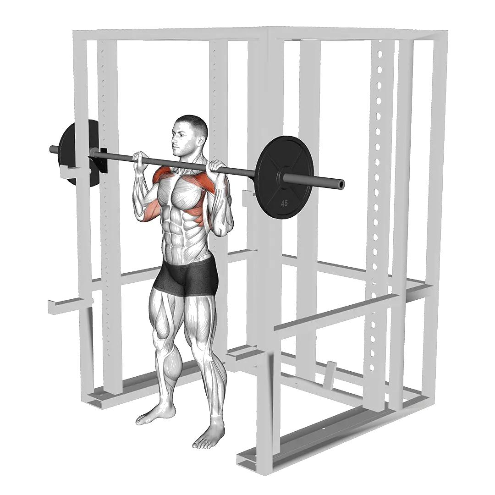

Shoulder pin press
Shoulder pin press permite consultar el peso medio y los estándares de fuerza como referencia dentro de hombros. Los músculos principales son Deltoides.

Peso medio: Intermedio
Referencia para una persona de nivel intermedio.
Hombres
149 lb
Mujeres
72 lb
Peso medio de Shoulder pin press [1RM]
| Nivel | ||
|---|---|---|
| Principiante | 65 lb | 24 lb |
| Novato | 102 lb | 44 lb |
| Intermedio | 149 lb | 72 lb |
| Avanzado | 205 lb | 106 lb |
| Élite | 266 lb | 145 lb |
Nota: estos estándares son estimaciones de 1RM basadas en levantadores promedio. Pueden variar según el peso corporal, la edad y otros factores personales. Consulta los datos detallados en la tabla inferior.
Estándares de fuerza de Shoulder pin press (lb)
Hombres por peso corporal (lb) [1RM]
| Peso corporal | Principiante | Novato | Intermedio | Avanzado | Élite |
|---|---|---|---|---|---|
| 110 | 29 | 51 | 80 | 117 | 158 |
| 120 | 35 | 59 | 91 | 130 | 173 |
| 130 | 41 | 67 | 101 | 142 | 187 |
| 140 | 48 | 76 | 111 | 154 | 201 |
| 150 | 54 | 84 | 121 | 165 | 214 |
| 160 | 61 | 92 | 130 | 176 | 226 |
| 170 | 67 | 99 | 140 | 187 | 238 |
| 180 | 74 | 107 | 149 | 197 | 250 |
| 190 | 80 | 114 | 158 | 208 | 262 |
| 200 | 86 | 122 | 166 | 217 | 273 |
| 210 | 92 | 129 | 175 | 227 | 283 |
| 220 | 98 | 136 | 183 | 236 | 294 |
| 230 | 104 | 143 | 191 | 245 | 304 |
| 240 | 110 | 150 | 198 | 254 | 314 |
| 250 | 115 | 156 | 206 | 263 | 323 |
| 260 | 121 | 163 | 214 | 271 | 333 |
| 270 | 126 | 169 | 221 | 279 | 342 |
| 280 | 132 | 176 | 228 | 287 | 351 |
| 290 | 137 | 182 | 235 | 295 | 359 |
| 300 | 142 | 188 | 242 | 303 | 368 |
| 310 | 148 | 194 | 249 | 311 | 376 |
Hombres por edad [1RM]
| Edad | Principiante | Novato | Intermedio | Avanzado | Élite |
|---|---|---|---|---|---|
| 15 | 56 | 87 | 127 | 174 | 227 |
| 20 | 64 | 99 | 145 | 199 | 259 |
| 25 | 65 | 102 | 149 | 205 | 266 |
| 30 | 65 | 102 | 149 | 205 | 266 |
| 35 | 65 | 102 | 149 | 205 | 266 |
| 40 | 65 | 102 | 149 | 205 | 266 |
| 45 | 62 | 97 | 141 | 194 | 252 |
| 50 | 58 | 91 | 132 | 182 | 237 |
| 55 | 54 | 84 | 123 | 168 | 219 |
| 60 | 49 | 77 | 112 | 154 | 200 |
| 65 | 44 | 69 | 101 | 139 | 181 |
| 70 | 40 | 62 | 91 | 125 | 162 |
| 75 | 36 | 56 | 81 | 111 | 145 |
| 80 | 32 | 50 | 73 | 100 | 130 |
| 85 | 29 | 45 | 65 | 89 | 116 |
| 90 | 26 | 40 | 59 | 81 | 105 |
Mujeres por peso corporal (lb) [1RM]
| Peso corporal | Principiante | Novato | Intermedio | Avanzado | Élite |
|---|---|---|---|---|---|
| 90 | 13 | 27 | 49 | 76 | 108 |
| 100 | 15 | 31 | 54 | 82 | 115 |
| 110 | 18 | 35 | 58 | 88 | 122 |
| 120 | 20 | 38 | 63 | 93 | 128 |
| 130 | 22 | 41 | 67 | 98 | 134 |
| 140 | 25 | 44 | 71 | 103 | 140 |
| 150 | 27 | 47 | 74 | 108 | 145 |
| 160 | 29 | 50 | 78 | 112 | 150 |
| 170 | 31 | 53 | 81 | 116 | 155 |
| 180 | 33 | 56 | 85 | 120 | 160 |
| 190 | 36 | 58 | 88 | 124 | 164 |
| 200 | 37 | 61 | 91 | 128 | 168 |
| 210 | 39 | 63 | 94 | 131 | 172 |
| 220 | 41 | 66 | 97 | 135 | 176 |
| 230 | 43 | 68 | 100 | 138 | 180 |
| 240 | 45 | 70 | 103 | 141 | 184 |
| 250 | 47 | 72 | 105 | 144 | 187 |
| 260 | 48 | 75 | 108 | 147 | 191 |
Mujeres por edad [1RM]
| Edad | Principiante | Novato | Intermedio | Avanzado | Élite |
|---|---|---|---|---|---|
| 15 | 20 | 38 | 61 | 91 | 124 |
| 20 | 23 | 43 | 70 | 104 | 142 |
| 25 | 24 | 44 | 72 | 106 | 145 |
| 30 | 24 | 44 | 72 | 106 | 145 |
| 35 | 24 | 44 | 72 | 106 | 145 |
| 40 | 24 | 44 | 72 | 106 | 145 |
| 45 | 23 | 42 | 68 | 101 | 138 |
| 50 | 21 | 39 | 64 | 95 | 130 |
| 55 | 20 | 36 | 59 | 88 | 120 |
| 60 | 18 | 33 | 54 | 80 | 109 |
| 65 | 16 | 30 | 49 | 72 | 99 |
| 70 | 15 | 27 | 44 | 65 | 89 |
| 75 | 13 | 24 | 39 | 58 | 79 |
| 80 | 12 | 22 | 35 | 52 | 71 |
| 85 | 10 | 19 | 31 | 46 | 64 |
| 90 | 9 | 17 | 28 | 42 | 57 |
Nota: una barra estándar de gimnasio suele pesar 44 lb.
Músculos trabajados
| Grupo | Músculos |
|---|---|
| Músculos principales | Deltoides |
| Músculos secundarios | Tríceps braquial, Bíceps braquial, Pectoral superior |
| Estabilizadores | Trapecio |
| Agarre | Flexores del antebrazo |
Registra y analiza en la app Shiba
Consulta pesos, repeticiones y progreso en un solo lugar.
Cómo leer la tabla
| Nivel | Descripción | Distribución |
|---|---|---|
| Principiante | Domina la técnica correcta y entrena de forma constante durante al menos 1 mes. | Parte inferior 5% |
| Novato | Entrena de forma constante durante al menos 6 meses. | Top 80% |
| Intermedio | Entrena de forma constante durante al menos 2 años. | Top 50% |
| Avanzado | Entrena de forma constante durante más de 5 años. | Top 20% |
| Élite | Entrena este ejercicio de forma especializada durante más de 5 años. | Top 5% |
Otros ejercicios
Cuerpo completo
Peso muerto
Cuerpo completo / BIG3
Press de banca
Cuerpo completo / BIG3
Sentadilla
Cuerpo completo / BIG3
Peso muerto con barra hexagonal
Cuerpo completo
Power clean
Cuerpo completo
Peso muerto rumano
Cuerpo completo
Peso muerto sumo
Cuerpo completo
Clean and jerk
Cuerpo completo
Snatch
Cuerpo completo
Clean
Cuerpo completo
Clean and press
Cuerpo completo
Rack pull
Cuerpo completo
Peso muerto rumano con mancuernas
Cuerpo completo / Mancuernas
Hang clean
Cuerpo completo
Peso muerto con piernas rígidas
Cuerpo completo
Muscle-ups
Cuerpo completo / Peso corporal
Power snatch
Cuerpo completo
Thruster
Cuerpo completo
Push jerk
Cuerpo completo
Peso muerto con mancuernas
Cuerpo completo / Mancuernas
Peso muerto con déficit
Cuerpo completo
Peso muerto rumano a una pierna
Cuerpo completo
Burpees
Cuerpo completo / Peso corporal
Hang power clean
Cuerpo completo
Split jerk
Cuerpo completo
Snatch con mancuernas
Cuerpo completo / Mancuernas
Clean high pull
Cuerpo completo
Snatch peso muerto
Cuerpo completo
Tirón de clean
Cuerpo completo
Peso muerto con pausa
Cuerpo completo
Peso muerto a una pierna
Cuerpo completo
Muscle snatch
Cuerpo completo
Jefferson peso muerto
Cuerpo completo
Snatch tirón
Cuerpo completo
Wall ball
Cuerpo completo
Zercher peso muerto
Cuerpo completo
Peso muerto a una pierna con mancuernas
Cuerpo completo / Mancuernas
Clean and press con mancuernas
Cuerpo completo / Mancuernas
Muscle-ups en anillas
Cuerpo completo / Peso corporal
Thruster con mancuernas
Cuerpo completo / Mancuernas
Hang snatch
Cuerpo completo
Alto tirón con mancuernas
Cuerpo completo / Mancuernas
Hang clean con mancuernas
Cuerpo completo / Mancuernas
Peso muerto detrás de la espalda
Cuerpo completo
Clap dominadas
Cuerpo completo / Peso corporal
Squat thrust
Cuerpo completo
Pecho
Press de banca
Pecho / BIG3
Press de banca con mancuernas
Pecho / Mancuernas
Flexiones
Pecho / Peso corporal
Press de banca inclinado
Pecho
Press de banca inclinado con mancuernas
Pecho / Mancuernas
Press de banca agarre cerrado
Pecho
Apertura de pecho en máquina
Pecho / Máquina
Apertura con mancuernas
Pecho / Mancuernas
Apertura declinado con mancuernas
Pecho / Mancuernas
Press de banca declinado
Pecho
Press de banca en máquina Smith
Pecho / Máquina
Apertura en cable
Pecho / Cable
Press de pecho
Pecho
En el suelo press
Pecho
Apertura inclinado con mancuernas
Pecho / Mancuernas
En el suelo press con mancuernas
Pecho / Mancuernas
Press de banca declinado con mancuernas
Pecho / Mancuernas
Press de banca con pausa
Pecho
Flexiones a un brazo
Pecho / Peso corporal
Press de banca agarre inverso
Pecho
Diamante flexiones
Pecho / Peso corporal
Press de banca agarre cerrado con mancuernas
Pecho / Mancuernas
Banco pin press
Pecho
Press de banca agarre amplio
Pecho
Flexiones declinado
Pecho / Peso corporal
Press de banca inclinado agarre cerrado
Pecho
Flexiones inclinadas
Pecho / Peso corporal
Flexiones agarre cerrado
Pecho / Peso corporal
Arquero flexiones
Pecho / Peso corporal
Spoto press
Pecho
Espalda
Peso muerto
Espalda / BIG3
Dominadas
Espalda / Peso corporal
Remo inclinado
Espalda
Jalón al pecho
Espalda
Chin-ups
Espalda / Peso corporal
Remo con mancuernas
Espalda / Mancuernas
Remo sentado en cable
Espalda / Cable
Encogimiento con barra
Espalda / Barra
Remo con barra T
Espalda
Encogimiento con mancuernas
Espalda / Mancuernas
Pendlay remo
Espalda
Remo en máquina
Espalda / Máquina
Pullover con mancuernas
Espalda / Mancuernas
Apertura inversa con mancuernas
Espalda / Mancuernas
Remo con apoyo de pecho con mancuernas
Espalda / Mancuernas
Jalón al pecho agarre cerrado
Espalda
Apertura inversa en máquina
Espalda / Máquina
Jalón al pecho agarre inverso
Espalda
Dominadas agarre neutro
Espalda / Peso corporal
Jalón brazos rectos
Espalda
Apertura inversa en cable
Espalda / Cable
Yates remo
Espalda
Remo inclinado con mancuernas
Espalda / Mancuernas
Extensión lumbar
Espalda
Banco tirón
Espalda
Extensión lumbar en máquina
Espalda / Máquina
Pullover con barra
Espalda / Barra
Dominadas a un brazo
Espalda / Peso corporal
Banco tirón con mancuernas
Espalda / Mancuernas
Remo invertido
Espalda
Renegade remo
Espalda
Jalón al pecho a un brazo
Espalda
Remo sentado en cable a un brazo
Espalda / Cable
Remo al mentón en cable
Espalda / Cable
Encogimiento en máquina
Espalda / Máquina
Encogimiento con barra hexagonal
Espalda
Encogimiento en máquina Smith
Espalda / Máquina
Elevación en Y inclinado con mancuernas
Espalda / Mancuernas
Encogimiento en cable
Espalda / Cable
Brazos flexionados pullover con barra
Espalda / Barra
Power encogimiento con barra
Espalda / Barra
Meadows remo
Espalda
Encogimiento detrás de la espalda con barra
Espalda / Barra
Hiperextensión inversa
Espalda
Hombros
Press de hombro
Hombros
Press de hombro con mancuernas
Hombros / Mancuernas
Elevación lateral con mancuernas
Hombros / Mancuernas
Press militar
Hombros
Press de hombro sentado
Hombros
Press de hombro sentado con mancuernas
Hombros / Mancuernas
Press de hombro en máquina
Hombros / Máquina
Push press
Hombros
Remo al mentón
Hombros
Elevación frontal con mancuernas
Hombros / Mancuernas
Elevación lateral en cable
Hombros / Cable
Arnold press
Hombros
Face pull
Hombros
Curl de cuello
Hombros
Remo al mentón con mancuernas
Hombros / Mancuernas
Elevación lateral en máquina
Hombros / Máquina
Press tras nuca
Hombros
Pino flexiones
Hombros / Peso corporal
Elevación frontal con barra
Hombros / Barra
Log press
Hombros
Press con landmine
Hombros
Extensión de cuello
Hombros
Z press
Hombros
Viking press
Hombros
Shoulder pin press
Hombros
Z press con mancuernas
Hombros / Mancuernas
Press a un brazo con landmine
Hombros
Rotación externa con mancuernas
Hombros / Mancuernas
Pike flexiones
Hombros / Peso corporal
Push press con mancuernas
Hombros / Mancuernas
Face pull con mancuernas
Hombros / Mancuernas
Rotación externa en cable
Hombros / Cable
Brazos
Curl con mancuernas
Brazos / Mancuernas
Curl con barra
Brazos / Barra
Curl martillo
Brazos
Curl con barra EZ
Brazos
Predicador curl
Brazos
Biceps curl en cable
Brazos / Cable
Curl de concentración con mancuernas
Brazos / Mancuernas
Curl inclinado con mancuernas
Brazos / Mancuernas
Biceps curl en máquina
Brazos / Máquina
Estricto curl
Brazos
Biceps curl a un brazo en cable
Brazos / Cable
Predicador curl a un brazo con mancuernas
Brazos / Mancuernas
Curl martillo inclinado
Brazos
Spider curl
Brazos
Zottman curl
Brazos
Curl sentado con mancuernas
Brazos / Mancuernas
Cheat curl
Brazos
Curl martillo en cable
Brazos / Cable
Overhead curl en cable
Brazos / Cable
Curl inclinado en cable
Brazos / Cable
Curl tumbado en cable
Brazos / Cable
Fondos
Brazos / Peso corporal
Jalón de tríceps
Brazos
Skull crusher
Brazos
Triceps rope pushdown
Brazos
Jalón de tríceps a un brazo
Brazos
Triceps extensión con mancuernas
Brazos / Mancuernas
Extensión de tríceps
Brazos / Barra
Triceps extensión tumbado con mancuernas
Brazos / Mancuernas
Dips sentado en máquina
Brazos / Máquina
Patada con mancuernas
Brazos / Mancuernas
Overhead extensión en cable
Brazos / Cable
Triceps extensión en máquina
Brazos / Máquina
French press sentado con mancuernas
Brazos / Mancuernas
Pushdown agarre inverso
Brazos
JM press
Brazos
Tate press
Brazos
Dips en anillas
Brazos / Peso corporal
Fondos en banco
Brazos / Peso corporal
Curl de muñeca
Brazos
Inverso curl con barra
Brazos / Barra
Curl de muñeca inverso
Brazos
Curl de muñeca con mancuernas
Brazos / Mancuernas
Curl de muñeca inverso con mancuernas
Brazos / Mancuernas
Inverso curl con mancuernas
Brazos / Mancuernas
Piernas
Sentadilla
Piernas / BIG3
Trineo prensa de piernas
Piernas
Sentadilla frontal
Piernas
Hip thrust
Piernas
Extensión de pierna
Piernas
Horizontal prensa de piernas
Piernas
Hack squat
Piernas
Curl femoral sentado
Piernas
Sentadilla búlgara con mancuernas
Piernas / Mancuernas
Sentadilla goblet
Piernas
Curl femoral tumbado
Piernas
Elevación de gemelos en máquina
Piernas / Máquina
Lunge con mancuernas
Piernas / Mancuernas
Box sentadilla
Piernas
Sentadilla con peso corporal
Piernas
Vertical prensa de piernas
Piernas
Sentadilla búlgara
Piernas
Elevación de gemelos sentado
Piernas
Sentadilla en máquina Smith
Piernas / Máquina
Abducción de cadera
Piernas
Good morning
Piernas
Zercher sentadilla
Piernas
Lunge con barra
Piernas / Barra
Aducción de cadera
Piernas
Sentadilla overhead
Piernas
Elevación de gemelos con barra
Piernas / Barra
Sentadilla con mancuernas
Piernas / Mancuernas
Sentadilla split
Piernas
Elevación de gemelos con mancuernas
Piernas / Mancuernas
Pull through en cable
Piernas / Cable
Curl femoral de pie
Piernas
Sentadilla con landmine
Piernas
Inverso lunge con barra
Piernas / Barra
Puente de glúteos con barra
Piernas / Barra
Press a una pierna
Piernas
Trineo press elevación de gemelos
Piernas
Sentadilla a una pierna
Piernas
Belt sentadilla
Piernas
Safety bar sentadilla
Piernas
Pistol sentadilla
Piernas
Sentadilla con pausa
Piernas
Hack squat con barra
Piernas / Barra
Sentadilla sumo
Piernas
Patada en cable
Piernas / Cable
Peso corporal elevación de gemelos
Piernas
Zancada
Piernas
Puente de glúteos
Piernas
Pin sentadilla
Piernas
Caminando lunge
Piernas
Sentadilla frontal con mancuernas
Piernas / Mancuernas
Sentadilla split con mancuernas
Piernas / Mancuernas
Inverso lunge
Piernas
Salto con sentadilla
Piernas
Curl nórdico de isquios
Piernas
Sissy sentadilla
Piernas
Half sentadilla
Piernas
Glute ham raise
Piernas
Extensión de pierna en cable
Piernas / Cable
Elevación de gemelos a una pierna sentado
Piernas
Side lunge
Piernas
Patada de glúteo
Piernas
Donkey elevación de gemelos
Piernas
Caminando elevación de gemelos con mancuernas
Piernas / Mancuernas
Elevación lateral de pierna
Piernas / Peso corporal
Jefferson sentadilla
Piernas
En el suelo abducción de cadera
Piernas
Extensión de cadera
Piernas
En el suelo extensión de cadera
Piernas
Core
Sit-ups
Core / Peso corporal
Crunch en cable
Core / Cable
Crunch sentado en máquina
Core / Máquina
Crunch abdominal
Core / Peso corporal
Flexión lateral con mancuernas
Core / Mancuernas
Woodchopper en cable
Core / Cable
Elevación de piernas colgado
Core / Peso corporal
Giro ruso
Core / Peso corporal
Elevación de piernas tumbado
Core / Peso corporal
Sit-ups declinado
Core / Peso corporal
Elevación de rodillas colgado
Core / Peso corporal
Rueda abdominal
Core
Toes-to-bar
Core / Peso corporal
Crunch declinado
Core / Peso corporal
Jumping jack
Core / Peso corporal
Bicicleta crunch
Core / Peso corporal
Inverso crunch
Core / Peso corporal
Flutter kicks
Core / Peso corporal
Mountain climbers
Core / Peso corporal
Polea alta crunch
Core / Peso corporal
Crunch de pie en cable
Core / Cable
Superman
Core / Peso corporal
Crunch lateral
Core / Peso corporal
Roman chair flexión lateral
Core
Tijeras abdominales
Core / Peso corporal